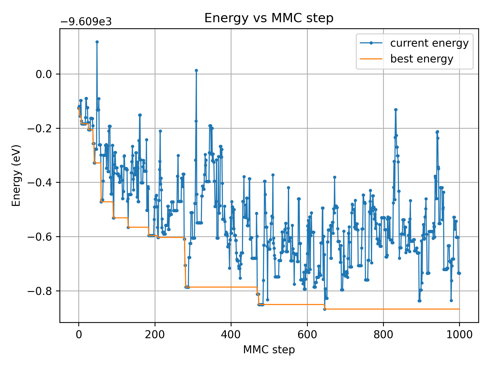
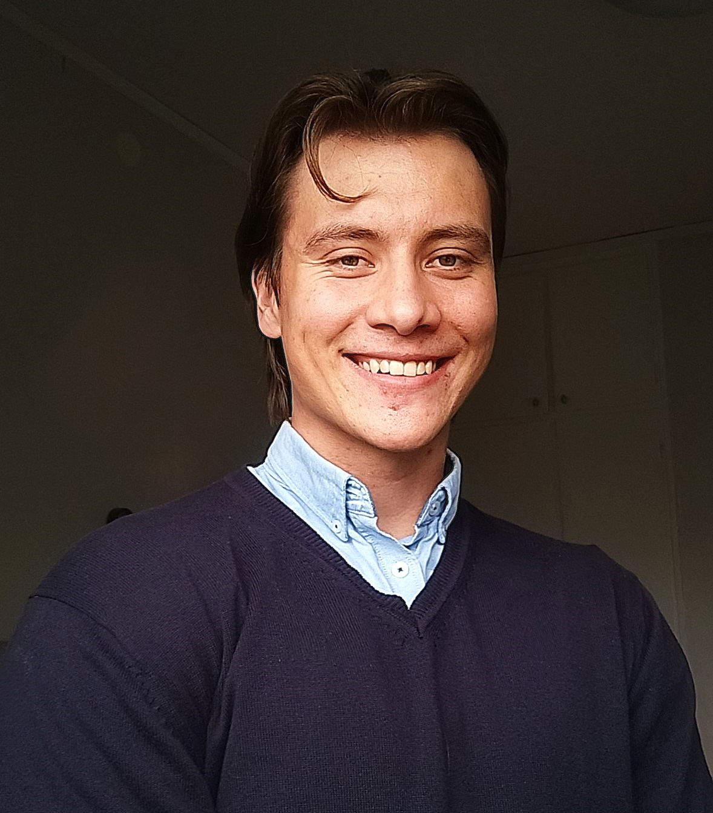
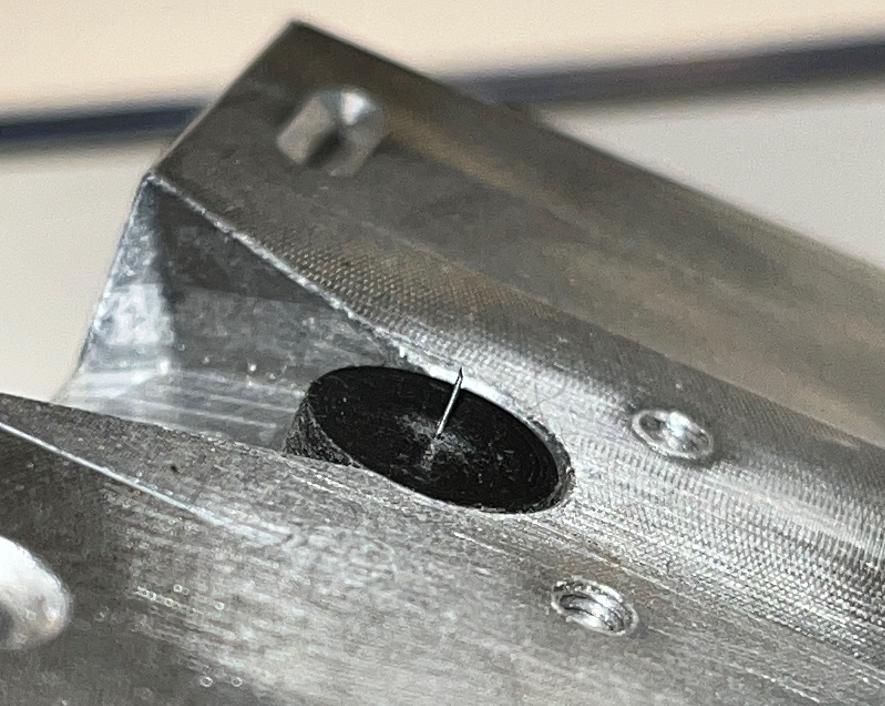
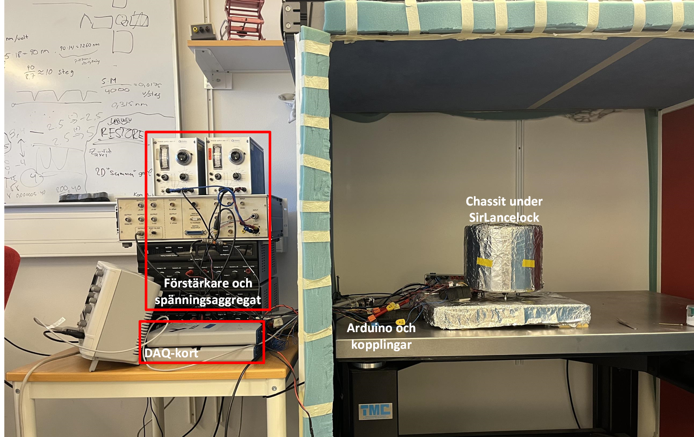

Fysik och simulering
Monte Carlo-simulering av vakanser i vanadiumnitrid
Ett projekt om atomistiska simuleringar, materialfysik och maskininlärda potentialer.

Teknisk fysik och elektroteknik
Jag arbetar med modellering och simulering av fysik och data med en kreativ touch.
Jag studerar teknisk fysik och elektroteknik vid Linköpings universitet. Jag tycker särskilt om projekt där fysik, matematik och programmering används för att förstå, simulera eller visualisera komplexa system.
Kunskaper och utbildning
Klicka på ett område för att se relevanta kurser.
TMMV01 Aerodynamik Pågående
TMME50 Flygmekanik Pågående
TTFY54 Kvantmekanik
TFYA90 Beräkningsfysik
TFYA40 Analytisk mekanik
TFYM01 Fasta tillståndets fysik
TFYA12 Termodynamik och statistisk mekanik
TYFB05 och TFYB09 Elektromagnetism I och II
TATA77 Fourieranalys
TATA45 Komplex analys
TATA65 Diskret matematik
TATA44 Vektoranalys
TATA43 Flervariabelanalys
TSFS12 Autonoma farkoster Pågående
TFYA75 Fysik – kandidatprojekt
TSRT12 Reglerteknik
TSDT18 Signaler och system
TFYB13 Projektkurs i teknisk fysik Pågående
TFYA17 Projektlaborationer i fysik
TDDE23 Funktionell och imperativ programmering, del 1
TDDE24 Funktionell och imperativ programmering, del 2
TANA21 Beräkningsmatematik
TAOP07 Optimeringslära, grundkurs
TMME69 Mekanik, fördjupningskurs
TDDE71 Programmering och datastrukturer
TDDD80 Mobila och sociala applikationer
TSEA28 Datorteknik
TSBK07 Datorgrafik
TSTE05 Elektronik och mätteknik
TSEA51 Digitalteknik
Portfolio
Ett urval av projekt inom fysik, programmering, simulering och kreativt arbete.

Fysik och simulering
Ett projekt om atomistiska simuleringar, materialfysik och maskininlärda potentialer.


Fysik och elektronik
Konstruktion och utvärdering av ett sveptunnelmikroskop med fokus på precision, mätteknik och reglering.

Datorgrafik
En interaktiv 3D-värld skapad med C++, OpenGL, terränggenerering, kollisionshantering och kamerastyrning.

Spelutveckling
Ett programmeringsprojekt med fokus på spelmekanik, problemlösning och interaktion.

Applikationsutveckling
En mobilapplikation utvecklad i Java inom kursen Mobila och sociala applikationer.

Kreativt skrivande
Ett science fiction-äventyr om identitet, familj, ansvar och en värld som verkar perfekt på ytan.